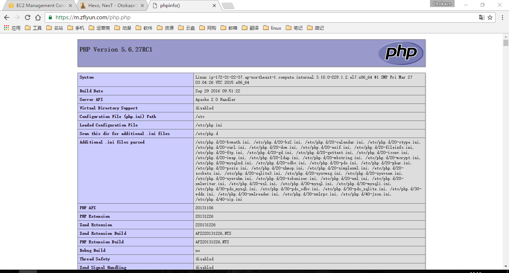

Linux - Apache - MySQL - PHP，一组常用来搭建动态网站或者服务器的开源软件，本身都是各自独立的程序，但是因为常被放在一起使用，拥有了越来越高的兼容度，共同组成了一个强大的 Web 应用程序平台。
编译安装
如果你想快速搭建 LAMP 环境，建议选择 yum 安装，如果想要自己定制或者是生产环境，建议选择 - 编译安装LAMP、LNMP环境！
配置yum源
epel
RedHat 扩展软件 yum 源
官网 --> http://mirrors.ustc.edu.cn/fedora/epel/
CentOS 6
rpm -ivh http://mirrors.ustc.edu.cn/fedora/epel/epel-release-latest-6.noarch.rpm
CentOS 7
rpm -ivh http://mirrors.ustc.edu.cn/fedora/epel/epel-release-latest-7.noarch.rpm
mysql
mysql 社区版 yum 源
官网 --> http://repo.mysql.com/
CentOS 6
rpm -ivh http://repo.mysql.com/mysql57-community-release-el6.rpm
CentOS 7
rpm -ivh http://repo.mysql.com/mysql57-community-release-el7.rpm
mariadb
mariadb yum 源
mysql 被甲骨文收购之前的一个分支版本，避免 mysql 闭源风险；
这里选择 mysql，你也可以选择安装 mariadb，配置基本兼容。
官网 --> https://downloads.mariadb.org/mariadb/repositories/#mirror=neusoft
CentOS 6
--- mariadb.repo ---
# MariaDB 10.1 CentOS repository list - created 2016-11-28 10:25 UTC
# http://downloads.mariadb.org/mariadb/repositories/
[mariadb]
name = MariaDB
baseurl = http://yum.mariadb.org/10.1/centos6-amd64
gpgkey=https://yum.mariadb.org/RPM-GPG-KEY-MariaDB
gpgcheck=1
--- mariadb.repo ---
CentOS 7
--- mariadb.repo ---
# MariaDB 10.1 CentOS repository list - created 2016-11-28 10:27 UTC
# http://downloads.mariadb.org/mariadb/repositories/
[mariadb]
name = MariaDB
baseurl = http://yum.mariadb.org/10.1/centos7-amd64
gpgkey=https://yum.mariadb.org/RPM-GPG-KEY-MariaDB
gpgcheck=1
--- mariadb.repo ---
安装Apache
yum -y install httpd httpd-tools
安装MySQL
yum -y install mysql mysql-server mysql-devel
service mysqld start
mysql_secure_installation # mysql安全初始化设置
# 设置root的密码，一路回车 出现Thanks for using MySQL! 表示设置成功！
安装PHP5
yum -y install php php-devel php-mysql php-gd libjpeg* php-imap php-ldap php-odbc php-pear php-xml php-xmlrpc php-mbstring php-mcrypt php-bcmath php-mhash libmcrypt
启动服务
chkconfig httpd on
chkconfig mysqld on
service httpd start
service mysqld start
ss -lnp | egrep 'httpd|mysqld'
环境测试
vim /var/www/html/info.php
--- info.php ---
<?php
phpinfo();
?>
--- info.php ---
chown apache:apache /var/www/html/www/info.php
浏览http://IP/info.php
